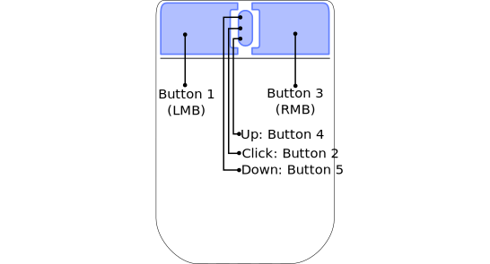
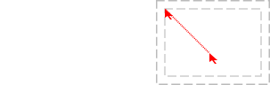

Module: mouse
awesome mouse API.
The mouse buttons are represented as index. The common ones are:

It is possible to be notified of mouse events by connecting to various
client, widgets and wibox signals:
mouse::entermouse::leavemouse::pressmouse::releasemouse::move
It is also possible to add generic mouse button callbacks for clients,
wiboxes and the root window. Those are set in the default rc.lua as such:
root:
root.buttons(awful.util.table.join( awful.button({ }, 3, function () mymainmenu:toggle() end), awful.button({ }, 4, awful.tag.viewnext), awful.button({ }, 5, awful.tag.viewprev) ))
client:
clientbuttons = awful.util.table.join( awful.button({ }, 1, function (c) client.focus = c; c:raise() end), awful.button({ modkey }, 1, awful.mouse.client.move), awful.button({ modkey }, 3, awful.mouse.client.resize) )
See also mousegrabber
Info:
- Copyright: 2008-2009 Julien Danjou
- Author: Julien Danjou <julien@danjou.info>
Functions
| mouse.append_global_mousebindings (buttons) | Add multiple awful.button based mousebindings to the global set. | |
Static module functions
| mouse.object_under_pointer () -> client.object or nil | Get the client or any object which is under the pointer. | |
| awful.mouse.wibox.move (w) | Move the wibox under the cursor. | |
| awful.mouse.append_global_mousebinding (button) | Add an awful.button based mousebinding to the global set. | |
| awful.mouse.remove_global_mousebinding (button) | Remove a mousebinding from the global set. | |
| awful.mouse.append_client_mousebinding (button) | Add an awful.button to the default client buttons. | |
| awful.mouse.append_client_mousebindings (buttons) | Add a awful.buttons to the default client buttons. | |
| awful.mouse.remove_client_mousebinding (button) -> boolean | Remove a mousebinding from the default client buttons. | |
| mouse.coords ([coords_table=nil[, silent=nil]]) -> (integer, integer, table) | Get or set the mouse coords. | |
Object properties
| screen | screen | The screen under the cursor | |
| current_client | client or nil | Get the client currently under the mouse cursor. | |
| current_wibox | wibox or nil | Get the wibox currently under the mouse cursor. | |
| current_widgets | nil or table | Get the widgets currently under the mouse cursor. | |
| current_widget | widget or nil | Get the topmost widget currently under the mouse cursor. | |
| current_widget_geometry | table | Get the current widget geometry. | |
| current_widget_geometries | table | Get the current widget geometries. | |
| is_left_mouse_button_pressed | boolean | True if the left mouse button is pressed. | |
| is_right_mouse_button_pressed | boolean | True if the right mouse button is pressed. | |
| is_middle_mouse_button_pressed | boolean | True if the middle mouse button is pressed. | |
Theme variables
| beautiful.snap_bg | color or string or gradient or pattern | The snap outline background color. | |
| beautiful.snap_border_width | integer | The snap outline width. | |
| beautiful.snap_shape | function | The snap outline shape. | |
| beautiful.snapper_gap | number | The gap between snapped contents. | |
Deprecated functions
| awful.mouse.client_under_pointer [deprecated] | Get the client object under the pointer. | |
Fields
| mouse.awful.mouse.snap.default_distance | integer | The default snap distance. | |
| mouse.awful.mouse.snap.edge_enabled | N/A | Enable screen edges snapping. | |
| mouse.awful.mouse.snap.client_enabled | N/A | Enable client to client snapping. | |
| mouse.awful.mouse.drag_to_tag.enabled | N/A | Enable changing tag when a client is dragged to the edge of the screen. | |
lib.awful.mouse.client Functions
| awful.mouse.client.move (c, snap, finished_cb) | Move a client. | |
| awful.mouse.client.dragtotag.border [deprecated] | Move a client to a tag by dragging it onto the left / right side of the screen. | |
| awful.mouse.client.corner [deprecated] | Get a client corner coordinates. | |
| awful.mouse.client.resize (c, corner[, args={}]) -> string | Resize a client. | |
lib.awful.mouse.resize Functions
| beautiful.cursor_mouse_resize | string | The resize cursor name. | |
| beautiful.cursor_mouse_move | string | The move cursor name. | |
| awful.mouse.resize.set_mode (m) | Set the resize mode. | ||
| awful.mouse.resize.add_enter_callback (cb, context) | Add an initialization callback. | ||
| awful.mouse.resize.add_move_callback (cb, context) | Add a “move” callback. | ||
| awful.mouse.resize.add_leave_callback (cb, context) | Add a “leave” callback This callback is executed just before the mousegrabber stop | ||
| awful.mouse.resize (client, context[, args={}]) | Resize the drawable. | ||
lib.awful.mouse.snap Functions
| awful.mouse.snap (c, snap, x, y, fixed_x, fixed_y) | Snap a client to the closest client or screen edge. | |
Functions
Methods- mouse.append_global_mousebindings (buttons)
-
Add multiple awful.button based mousebindings to the global set.
A global mousebinding is one which is always present, even when there is no focused client. If your intent is too add a mousebinding which acts on the focused client do not use this
Parameters:
- buttons
table
A table of awful.button objects. Optionally, it can have
a
groupentry. If set, thegroupproperty will be set on allawful.buttonsobjects.
See also:
- buttons
table
A table of awful.button objects. Optionally, it can have
a
Static module functions
- mouse.object_under_pointer () -> client.object or nil
-
Get the client or any object which is under the pointer.
Returns:
-
client.object or nil
A client or nil.
- awful.mouse.wibox.move (w) · 1 permission
-
Move the wibox under the cursor.
Parameters:
- w wibox The wibox to move, or none to use that under the pointer
Click to display more Requested actions or permissions:
Class Permission Context Default Description wibox geometry mouse.move granted Requests to move the wibox. - awful.mouse.append_global_mousebinding (button)
-
Add an awful.button based mousebinding to the global set.
A global mousebinding is one which is always present, even when there is no focused client. If your intent is too add a mousebinding which acts on the focused client do not use this.
Parameters:
- button awful.button The button object.
See also:
- awful.mouse.remove_global_mousebinding (button)
-
Remove a mousebinding from the global set.
Parameters:
- button awful.button The button object.
See also:
- awful.mouse.append_client_mousebinding (button) · 1 signal
-
Add an awful.button to the default client buttons.
Parameters:
- button awful.button The button.
See also:
Click to display more Emit signals:
client_mousebinding::addedbuttonawful.button The button.
- awful.mouse.append_client_mousebindings (buttons)
-
Add a awful.buttons to the default client buttons.
Parameters:
- buttons table A table containing awful.button objects.
See also:
- awful.button
- awful.keyboard.append_client_keybinding
- awful.mouse.append_client_mousebinding
- awful.keyboard.append_client_keybindings
- awful.mouse.remove_client_mousebinding (button) -> boolean
-
Remove a mousebinding from the default client buttons.
Parameters:
- button awful.button The button.
Returns:
-
boolean
True if the button was removed and false if it wasn’t found.
See also:
- mouse.coords ([coords_table=nil[, silent=nil]]) -> (integer, integer, table)
-
Get or set the mouse coords.

Usage example output:
235Parameters:
- coords_table None or a table with x and y keys as mouse
coordinates.
- x integer The mouse horizontal position (default nil)
- y integer The mouse vertical position (default nil)
- silent boolean Disable mouse::enter or mouse::leave events that could be triggered by the pointer when moving. (default false)
Returns:
- integer table.x The horizontal position
- integer table.y The vertical position
- table table.buttons Table containing the status of buttons, e.g. field [1] is true when button 1 is pressed.
Usage:
-- Get the position print(mouse.coords().x) -- Change the position mouse.coords { x = 185, y = 10 }
- coords_table None or a table with x and y keys as mouse
coordinates.
Object properties
- screen screen
- The screen under the cursor
- current_client client or nil
-
Get the client currently under the mouse cursor.
Type constraints:
- The client or nil client
- current_wibox wibox or nil
-
Get the wibox currently under the mouse cursor.
Type constraints:
- The wibox or nil wibox
- current_widgets nil or table
-
Get the widgets currently under the mouse cursor.
Type constraints:
- list nil or table The widget list
- current_widget widget or nil
-
Get the topmost widget currently under the mouse cursor.
Type constraints:
- widget widget or nil The widget
See also:
- current_widget_geometry table
-
Get the current widget geometry.
Type constraints:
- The optional table geometry.
See also:
- current_widget_geometries table
-
Get the current widget geometries.
Type constraints:
- A optional table list of geometry tables.
See also:
- is_left_mouse_button_pressed boolean
- True if the left mouse button is pressed.
- is_right_mouse_button_pressed boolean
- True if the right mouse button is pressed.
- is_middle_mouse_button_pressed boolean
- True if the middle mouse button is pressed.
Theme variables
- beautiful.snap_bg color or string or gradient or pattern
- The snap outline background color.
- beautiful.snap_border_width integer
- The snap outline width.
- beautiful.snap_shape function
-
The snap outline shape.
Type constraints:
- shape function A gears.shape compatible function
- beautiful.snapper_gap number
-
The gap between snapped contents.
Type constraints:
- default: number 0)
Deprecated functions
- awful.mouse.client_under_pointer [deprecated]
-
Get the client object under the pointer.
Returns:
-
The client object under the pointer, if one can be found.
See also:
Fields
- mouse.awful.mouse.snap.default_distance integer
-
The default snap distance.
See also:
- mouse.awful.mouse.snap.edge_enabled N/A
- Enable screen edges snapping.
- mouse.awful.mouse.snap.client_enabled N/A
- Enable client to client snapping.
- mouse.awful.mouse.drag_to_tag.enabled N/A
- Enable changing tag when a client is dragged to the edge of the screen.
lib.awful.mouse.client Functions
- awful.mouse.client.move (c, snap, finished_cb) · 1 permission
-
Move a client.
Parameters:
- c The client to move, or the focused one if nil.
- snap The pixel to snap clients.
- finished_cb Deprecated, do not use.
Click to display more Requested actions or permissions:
Class Permission Context Default Description client geometry mouse.move granted When awful.mouse.client.move is called. - awful.mouse.client.dragtotag.border [deprecated]
-
Move a client to a tag by dragging it onto the left / right side of the screen.
Parameters:
- c The client to move
- awful.mouse.client.corner [deprecated]
-
Get a client corner coordinates.
Parameters:
- c client The client to get corner from, focused one by default. (default client.focus)
- corner string The corner to use: auto, top_left, top_right, bottom_left, bottom_right, left, right, top bottom. Default is auto, and auto find the nearest corner.
Returns:
- string The corner name
- number x The horizontal position
- number y The vertical position
- awful.mouse.client.resize (c, corner[, args={}]) -> string · 1 permission
-
Resize a client.
Parameters:
- c The client to resize, or the focused one by default.
- corner string The corner to grab on resize. Auto detected by default.
- args table A set of awful.placement arguments (default {})
Returns:
-
string
The corner (or side) name
Click to display more Requested actions or permissions:
Class Permission Context Default Description client geometry mouse.resize granted When awful.mouse.client.resize is called.
lib.awful.mouse.resize Functions
- beautiful.cursor_mouse_resize string
- The resize cursor name.
- beautiful.cursor_mouse_move string
- The move cursor name.
- awful.mouse.resize.set_mode (m)
-
Set the resize mode.
The available modes are:
- live: Resize the layout everytime the mouse moves.
- after: Resize the layout only when the mouse is released.
Some clients, such as XTerm, may lose information if resized too often.
Parameters:
- m string The mode
- awful.mouse.resize.add_enter_callback (cb, context)
-
Add an initialization callback.
This callback will be executed before the mouse grabbing starts.
Parameters:
- cb function The callback (or nil)
- context string The callback context
- awful.mouse.resize.add_move_callback (cb, context)
-
Add a “move” callback.
This callback is executed in “after” mode (see set_mode) instead of
applying the operation.
Parameters:
- cb function The callback (or nil)
- context string The callback context
- awful.mouse.resize.add_leave_callback (cb, context)
-
Add a “leave” callback
This callback is executed just before the mousegrabber stop
Parameters:
- cb function The callback (or nil)
- context string The callback context
- awful.mouse.resize (client, context[, args={}]) · 1 permission
-
Resize the drawable.
Valid
argsare:- enter_callback: A function called before the mousegrabber starts.
- move_callback: A function called when the mouse moves.
- leave_callback: A function called before the mousegrabber is released.
- mode: The resize mode.
Parameters:
- client client A client.
- context string The resizing context.
- args table A set of awful.placement arguments. (default {})
Click to display more Requested actions or permissions:
Class Permission Context Default Description wibox geometry mouse.resize granted Requests to resize the wibox.
lib.awful.mouse.snap Functions
- awful.mouse.snap (c, snap, x, y, fixed_x, fixed_y)
-
Snap a client to the closest client or screen edge.
Parameters:
- c The client to snap.
- snap The pixel to snap clients.
- x The client x coordinate.
- y The client y coordinate.
- fixed_x True if the client isn’t allowed to move in the x direction.
- fixed_y True if the client isn’t allowed to move in the y direction.